Photo credits
Where the pictures come from.
Every picture on this site was generated for this demo. None of them shows Grainhurst's work, because Grainhurst does not exist, and none of them is a photograph of a real house, a real job or a real person.
| What it shows | Where it came from | Used for | |
|---|---|---|---|
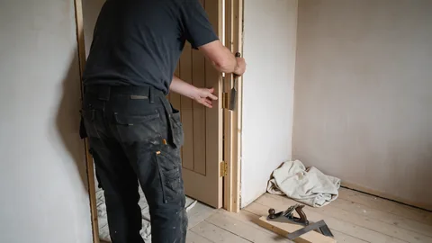 | A joiner hanging a new internal door, used on the home page and the doors page | Generated for this demo | Illustrative only |
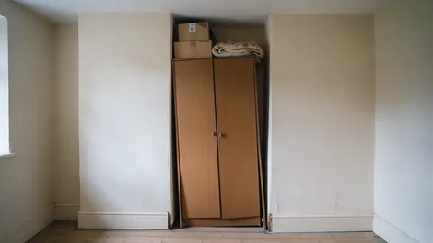 | The 'before' half of the slider: an old freestanding wardrobe stood in the alcove with a gap down the side and boxes on top | Generated for this demo | Illustrative only |
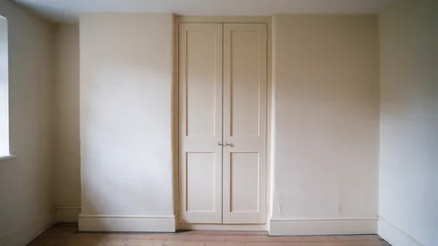 | The 'after' half of the slider, generated from the 'before' picture so it is the same alcove | Generated for this demo | Illustrative only |
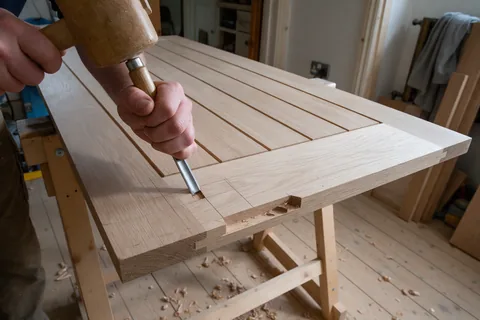 | A hinge recess being cut by hand into the edge of an oak door, used on the doors page and the work page | Generated for this demo | Illustrative only |
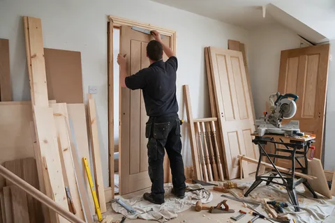 | A fire door being fitted into an old lining, used on the doors page, the urgent help page and the work page | Generated for this demo | Illustrative only |
 | The bottom edge of a door being planed, used on the doors page, the work page and the sticking doors article | Generated for this demo | Illustrative only |
 | A staircase in a hallway part way through having new spindles and a handrail fitted, used on the stairs page and the work page | Generated for this demo | Illustrative only |
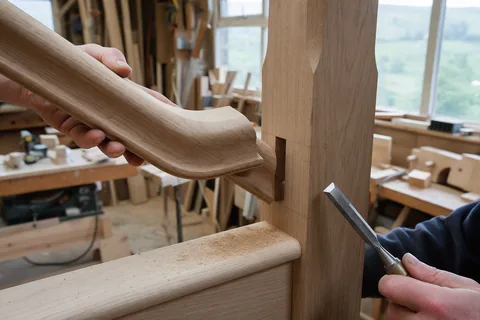 | A handrail being fitted into a newel post, used on the stairs page and the work page | Generated for this demo | Illustrative only |
 | A finished fitted wardrobe in an alcove, used on the wardrobes page, the work page and the wardrobes article | Generated for this demo | Illustrative only |
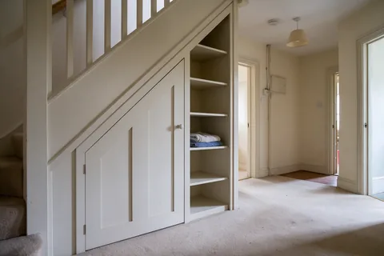 | Fitted storage built into the space under a staircase, used on the wardrobes page and the work page | Generated for this demo | Illustrative only |
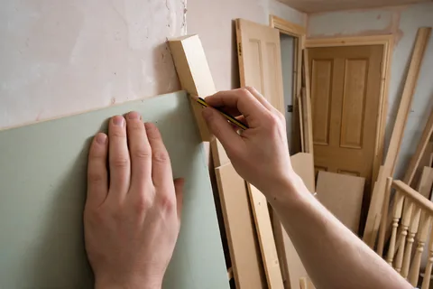 | A panel being scribed to an uneven plastered wall, used on the wardrobes page, the work page and the area pages | Generated for this demo | Illustrative only |
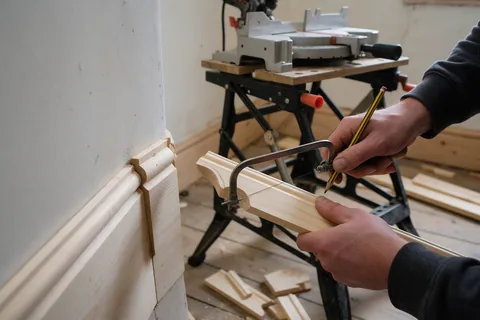 | Skirting being scribed to the profile of the piece already fitted, used on the skirting page and the work page | Generated for this demo | Illustrative only |
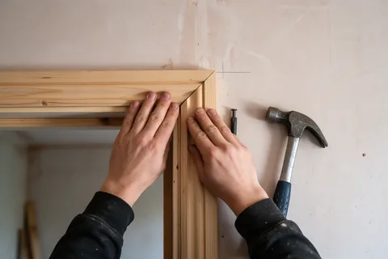 | Architrave being pushed up tight at the head of a door, used on the skirting page and the work page | Generated for this demo | Illustrative only |
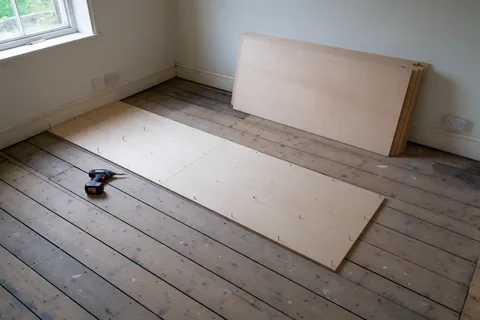 | Plywood being screwed down over old floorboards to level a floor, used on the skirting page, the decking page and the work page | Generated for this demo | Illustrative only |
 | A rotten section of a sash window being cut out and new timber offered in, used on the windows page, the work page and the windows article | Generated for this demo | Illustrative only |
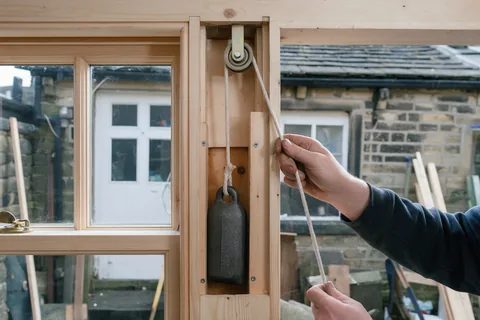 | An open sash weight pocket with a new cord going over the pulley, used on the windows page and the work page | Generated for this demo | Illustrative only |
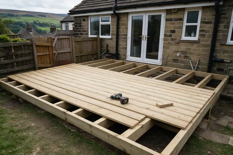 | The frame and joists of a new deck set out before any boards go down, used on the decking page and the work page | Generated for this demo | Illustrative only |
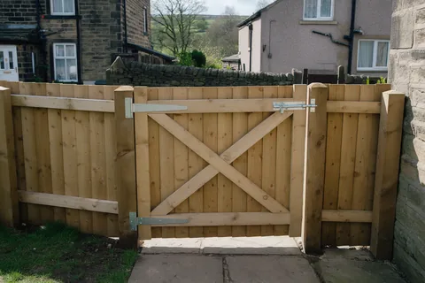 | A plain timber side gate hung in a stone wall, used on the decking page and the work page | Generated for this demo | Illustrative only |
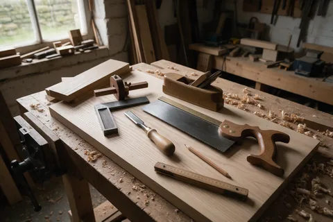 | A workbench laid out with hand tools, used on the work page and the about page | Generated for this demo | Illustrative only |
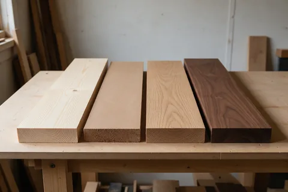 | Four planed boards side by side showing softwood, a plain pale board, oak and walnut, used on the services page | Generated for this demo | Illustrative only |
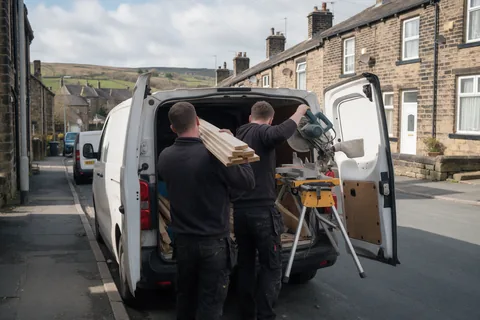 | Two joiners unloading a mitre saw and timber from a plain van on a terraced street, used on the about page | Generated for this demo | Illustrative only |
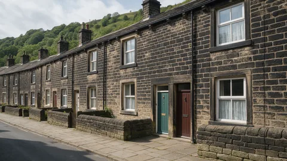 | A street of stone terraced houses in a Pennine valley, used on the home, areas and area pages | Generated for this demo | Illustrative only |
The rest of it
Everything else on the page is drawn in the browser: the brand mark, the icons, the four timber faces on the home page, the marking out line under every heading, the numbered diagram of what a fitted job is made of, the five stages from sawn to finished, the gaps round a hung door, the two steps of staircase in section, and the two alcove plans. No stock photography, no clip art and no third party images.
Nobody in any picture is identifiable, and no tool, tin, sheet, bag, workwear or van carries a real name or logo. Every file is a WebP under 200 KB.
The before and after
The pair on the home page is the same alcove twice. The 'after' picture was generated from the 'before' one, so the window light, the chimney breast and the floorboards all match. It is there to show the thing worth noticing about fitted joinery, which is that the difference is the gap down the side rather than the doors on the front.
The words
All the copy on this site was written for this demo. The firm, the people, the jobs and the reviews are invented. Anything factual, like why a scribe stays closed when a mitre opens or why the decay in an old window is always at the bottom, is general trade knowledge rather than advice on your property. There are no prices, no guarantees, no schemes, no qualifications and no response times anywhere on it, on purpose. Fire doors are only ever described as fitted to the maker's instructions, and nothing on this site claims anything about fire door testing or certification.
The numbers
The firm's number, 01632 960611, comes from the range Ofcom keeps for television and film, so it rings nobody. The email address ends in .example, which cannot receive anything. The only real number anywhere on this site is Clockwork's own, 07460 038202, in the bar at the top and the note at the bottom, and it is labelled as Clockwork's rather than the firm's.
Want one like this for a real firm?
Ring Clockwork on the number in the bar at the top of the page. This demo is here to show what gets built, not to sell you a door.